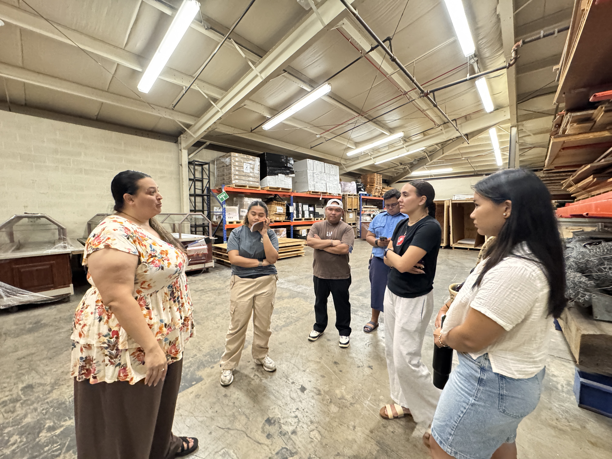

Case Study
PCC Supply Chain Project
Analyzed and redesigned the Polynesian Cultural Center's surplus inventory process by mapping the end-to-end workflow, identifying operational bottlenecks, and developing standardized procedures to improve inventory visibility, accountability, and warehouse efficiency.
Overview
The Polynesian Cultural Center's General Warehouse struggled with undocumented surplus inventory, inconsistent intake procedures, and limited inventory visibility, leading to inefficient use of warehouse space and delays in processing. Our team analyzed the existing workflow, identified operational bottlenecks, and developed a standardized surplus inventory process, including a future-state process map and Standard Operating Procedure (SOP), to improve accountability, inventory tracking, and operational efficiency. The project concluded with implementation recommendations supported by process analysis and benchmarking.
Tools & Methods
- Process Mapping
- Standard Operating Procedure (SOP) Design
- Gap Analysis
- Opportunity Analysis
- Pareto Analysis
- Cause & Effect (Fishbone) Diagram
- Benchmarking
- Stakeholder Interviews
- Excel
Screenshots

